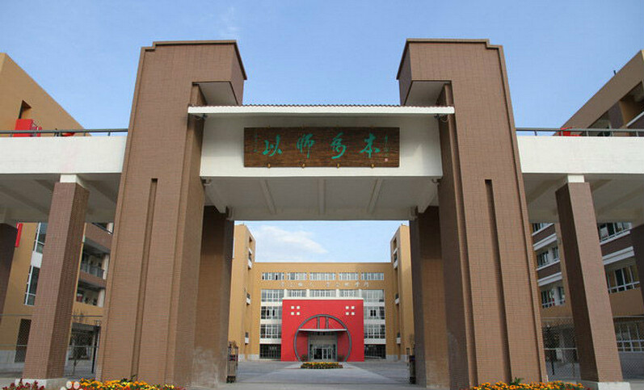
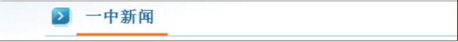
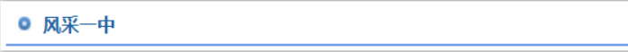
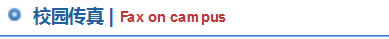

- [置顶]传承-未来-邯郸一中70周年校庆宣传 [2015-10-29]
- [置顶]邯郸市第一中学校友总会微信公众号正式 [2014-12-01]
- [置顶]邯郸市第一中学官方微信.... [2014-11-10]
- 近百所名校与邯郸学子面对面交流 [2016-06-25]
- 感谢您的陪伴！——2016高考后记 [2016-06-24]
- 校长高玉峰走进"清晨市民热线"直播间 [2016-06-25]
- 邯郸市2016文理科状元出炉，看学霸是如何.... [2016-06-25]
- 邯郸市一中向全市人民报喜！2016高考.. [2016-06-25]
- 副市长侯华梅来我校考察党建工作 [2016-06-23]
- 致敬最美的人——第十届"班主任节"形象展.... [2016-05-24]


- [置顶]《邯郸日报》对话高玉峰校长.... [2015-10-29]
- [置顶]凤凰网、中国网、新浪网、长城网.... [2014-12-01]
- [置顶]理想的学校.. [2014-11-10]
- 我校多名教师喜获殊荣.. [2016-06-25]
- 《邯郸晚报》报道我校高考成绩 [2016-06-24]
- 《邯郸晚报》报道我校高招咨询会 [2016-06-25]
- 《邯郸晚报》刊登我校名师点评2016高考试卷 [2016-06-25]
- 《邯郸教育》宣传我校办学特色及刊发师生文章 [2016-06-25]
- 致敬最美的人——第十届"班主任节"形象展.... [2016-06-23]
- 副市长侯华梅来我校考察党建工作 [2016-05-24]